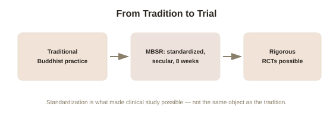

Chapter 4: MBSR and the Clinical Translation of Meditation
Chapter 3 drew a clear distinction between intensive traditional retreat practice, where adverse effects concentrate, and the modest, secular, clinically-delivered mindfulness most people actually encounter today — the version behind Chapter 1's well-controlled clinical findings. This chapter covers how that clinical version came to exist at all, and how far its own evidence base actually extends.
Kabat-Zinn and the deliberate secularization of a Buddhist practice
Molecular biologist Jon Kabat-Zinn developed Mindfulness-Based Stress Reduction (MBSR) in 1979 at the University of Massachusetts Medical Center, built from techniques drawn substantially from Buddhist mindfulness practice but deliberately stripped of religious framing, terminology, and metaphysical claims — designed specifically to be teachable and acceptable in a secular medical setting, to patients of any or no religious background, referred by physicians for chronic pain and stress-related conditions that conventional medicine wasn't managing well on its own. This wasn't a small, incidental adaptation — it was a deliberate act of translation, extracting a specific, teachable attentional skill (sustained, non-judgmental awareness of present-moment experience) from its original contemplative and religious context, and repackaging it as a structured, secular, eight-week clinical program with standardized content, assigned homework, and measurable outcomes, closer in format to physical therapy than to religious practice.
Why this translation mattered for what could actually be studied
MBSR's standardized, manualized structure is precisely what made rigorous clinical research on meditation possible at scale in the first place. A structured eight-week program with defined weekly content, consistent instructor training, and clear session counts can be run as a randomized controlled trial, compared against a control condition, and replicated across different research sites and patient populations — none of which is straightforwardly true of loosely-defined, highly variable traditional practice, where retreat length, teacher, tradition, and technique differ enormously from setting to setting. This is a direct, practical explanation for something worth noticing: the great majority of the well-controlled clinical evidence covered in Chapter 1 comes specifically from MBSR and closely related standardized programs (such as Mindfulness-Based Cognitive Therapy, adapted specifically for relapse prevention in recurrent depression), not from traditional retreat-style practice directly — meaning the clinical evidence base and the traditional contemplative tradition, while clearly related, aren't quite the same object being studied.

Where MBSR's own evidence base is genuinely strong, and where it thins out
Consistent with Chapter 1's honest calibration, MBSR and closely related programs have accumulated real, replicated randomized controlled trial evidence for a specific, bounded set of outcomes: modest but real reductions in chronic pain interference (not necessarily pain intensity itself, an important and often-missed distinction), meaningful reductions in anxiety and stress symptoms, and — for Mindfulness-Based Cognitive Therapy specifically — genuinely strong evidence for reducing relapse risk in people with a history of three or more prior depressive episodes, a well-replicated finding robust enough that it's now recommended in several national clinical guidelines. The evidence is considerably thinner, and more mixed, for many of the broader claims that circulate in popular and commercial mindfulness marketing — general cognitive enhancement, dramatic productivity gains, or mindfulness as a broad-spectrum treatment for conditions well outside this specific, better-studied set.
What this means for choosing how to actually practice
This gives a genuinely practical takeaway distinct from anything Chapters 1 through 3 offered individually: someone seeking meditation's best-evidenced clinical benefits specifically is generally better served by a standardized, evidence-based program like MBSR or MBCT, delivered by a trained instructor with the format's specific evidence base behind it, than by an unstructured attempt to approximate the practice from an app or a book — while someone drawn to the practice's broader traditional context, meaning, or community should understand they're engaging with a different, related but distinct thing, with a different evidence profile and, per Chapter 3, a different risk profile, particularly at higher intensity. Both are legitimate reasons to practice; conflating them, treating the standardized clinical version and the full traditional contemplative path as interchangeable, is where a lot of both overclaiming and undercaution about this whole topic actually originates.
Try this
Ideas for noticing or testing this in your own life.
- If you're considering meditation specifically for a clinical concern (chronic pain, anxiety, recurring depression), look specifically for an MBSR or MBCT program rather than an unstructured app, given where the strongest clinical evidence actually concentrates.
- Notice the next time mindfulness is marketed with a sweeping, general claim and ask whether it's closer to the well-evidenced clinical territory (pain interference, anxiety, depression relapse) or the thinner, more speculative territory beyond it.
Worth pulling on?
A few loose threads from this chapter — if any of these genuinely grab you, that's a good sign of where to go next.
- All of this rests on third-person, measurable outcomes — but contemplative traditions themselves were never primarily concerned with clinical outcomes at all, raising a real methodological question about what neuroscience can and can't actually capture about the practice. → The subject of the final chapter in this topic.
- The standardization that made MBSR study-able is the same basic move — trading messy, variable real-world practice for something structured and comparable — that underlies rigorous research broadly. → Already in the library: Philosophy of Science covers related questions about what standardized methods can and can't capture.